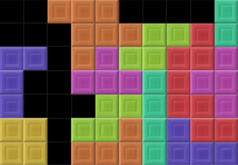

Image Processor
Make your pictures look funny.


An unprocessed, and processed image.
What is it?
This Image processor project was created as part of a university assignment, as such, less information will be available to avoid leaking hints.
An image processor, that applies a rotation and color normalisation filter to make it look different from the source.
The image is then written to a new file, leaving the original one intact.
Technical Details
This processor was developed using exclusively C.
A proprietary image format is read in, and then processed by manipulating the color values of each pixel.
The image format and data itself are validated, to ensure a valid image is created, which is then written to a new file on disk
Challenges
Memory management is one of the main problems beginners in C (such as myself) run into, memory must be carefully managed to ensure no leaks are present, or is not using more memory than necessary. To help debug memory errors, I used valgrind with the full leak checking option.
Data truncation due to imprecise rounding is another problem I was unsure of how to solve. This can result in overflows or underflows, or incorrect values , resulting in an image with weird side effects (like being far too oversaturated), I eventually came to the solution of just rounding and capping color values to prevent these.
Storing the image itself whilst its being processed was another problem, as data structures in C are more limited compared to other languages. I decided on a 1D array for simplicity, using precise logic to manipulate values to match the CW spec.
What I learnt
This was my first time working with C, I have come to learned to appreciate some of the creature comforts in more high level languages, such as classes and imports, in languages like Java or Python, as well as garbage collecters, as manually managing memory and pointers can be a massive headache.
This was also a good lesson in defensive programming, as small errors in the input or in the logic can crash the entire processor, so each step had to be carefully verified and checked to ensure a robust implementation was created.
2026 Ching Kong Godfrey Lam